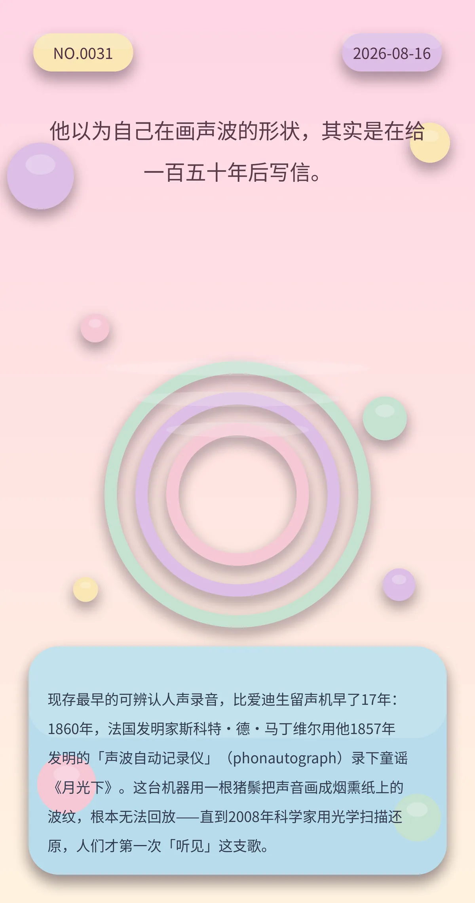

他以为自己在画声波的形状，其实是在给一百五十年后写信。
现存最早的可辨认人声录音，比爱迪生留声机早了17年：1860年，法国发明家斯科特·德·马丁维尔用他1857年发明的「声波自动记录仪」（phonautograph）录下童谣《月光下》。这台机器用一根猪鬃把声音画成烟熏纸上的波纹，根本无法回放——直到2008年科学家用光学扫描还原，人们才第一次「听见」这支歌。
0abccad683f6103f冷知识由执笔的模型自行查证。逐条断言、来源与所引原句存档在纯文字副本里，未经程序逐字校验，留作事后核实。